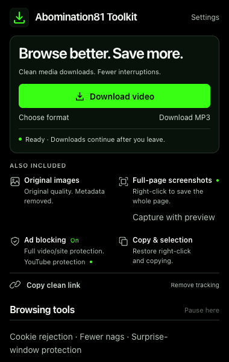
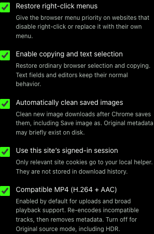

Right-click.
Keep quality.
Strip metadata.
Clean H.264/AAC MP4s by default, plus original images in Chrome.

Source quality. Original images.
- Download video
- Highest resolution and frame rate. H.264/AAC by default, converting incompatible tracks when needed.
- Save original image
- The largest exposed source, with original format, rotation and animation retained. Identifying metadata removed.
- Leave the page
- Background jobs keep running. Finished files appear in Chrome’s download panel and normal download folder.
Copy without blockers.
Restore right-click, copying and selection. Copy clean link removes tracking while preserving functional URLs.
Chrome image saves are cleaned after completion. Our image command cleans first. Settings also offers Original source video mode.

One setup.
Then right-click.
Installs the extension and silent local helper. Future signed updates install automatically.
- Unzip the installer download.
- Run Install.command (Mac) or Install-Windows.cmd (Windows).
- At
chrome://extensions, enable Developer mode and Load unpacked. Select setup’s extension folder. - Refresh webpages, then right-click and choose Download video.
Requirements: Chrome 127+. Mac tested; Windows installation unverified.
Internet required. Mac setup may install Homebrew and ask for your password. Windows requires WinGet. Use the installer ZIP, not GitHub’s automatic source archives.
Already installed? Enable automatic updates once.
For 0.4.x or initial 0.5.0 copies, run the latest installer, reload the extension at chrome://extensions, and refresh open pages. Future helper and extension updates install silently after downloads finish. Keep Developer mode enabled. Settings has update status, a manual check and an opt-out.
Know what you’re downloading.
Conversion can be lossy. Original source mode preserves codecs and HDR. Platform upload limits still apply. No DRM or recording fallback. Coverage and validation. Release notes and checksums.